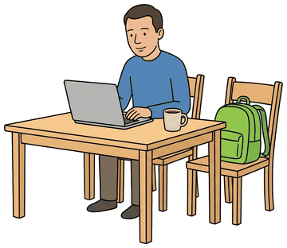
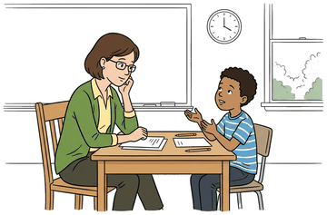
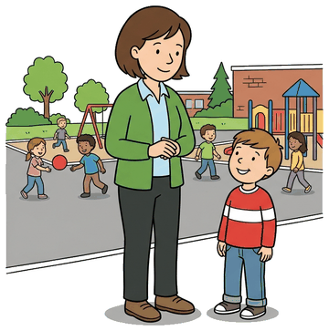
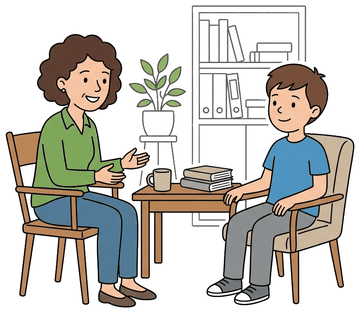
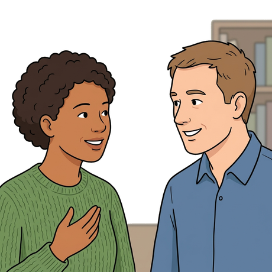
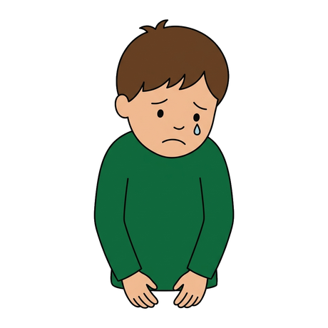

Day 1 - Who's Who at School and Naming the Problem
1-2. Picture + people (35 min). The unit doc's opener and people match. Then play Who Can Help? here together.
3-5. Problems, phrases, grammar (50 min). In the unit doc.
6. Listening (12 min). Play Six Voicemails on the Audio tab - students write the kind of problem.
7. Communicate (8 min) + homework: Day 1 practice form.
Day 2 - On the Phone
2. Leaving a message (20 min). Doc section 2, then the Message game here.
3-4. Polite requests + time questions (30 min). Doc sections 3-4; play Polite or Strong? here.
5. Listening: What time? (12 min). Audio tab Times Dictation, or the Times game for self-study.
6-7. The return call + practice (33 min). Audio tab The Return Call, then pairs. Homework: Day 2 practice form.
Day 3 - The Meeting (speaking day)
2-3. Meeting language + listening (35 min). Doc sections 2-3; play The Meeting on the Audio tab.
5. Role-play rounds (40 min). Cards in the unit doc. Tables in person, breakout rooms online.
Watch in class: the video links on the All Links tab fit Day 2 (interpreter) and Day 3 (questions to ask).
Day 4 - At the Meeting: Tone, the Four Parts, Greeting
2. Tone and conduct (20 min). Doc section 2, then play Tone here together - the pictures are the exercise.
3-4. The four parts + greeting the teacher (35 min). Doc sections 3-4. Mr./Ms. or a first name: the teacher decides.
5. Listening: Four Greetings (15 min). Audio tab Four Greetings. Play twice - they write the name, then decide title or first name.
6-7. Grammar + pairs (25 min). "Well," + present continuous, then the four teacher cards. Homework: Day 4 practice form.
Day 5 - Describing the Problem: the Five Parts
2. The five parts (15 min). Rutaba's model in the doc, then play 5 Parts here.
3. "When ..." sentences (15 min). Simple present in BOTH halves - the one they get wrong.
4. Feelings (20 min). Doc section 4, then play Feelings here. The agendaweb link on All Links is extra practice.
5-6. Behaviour at home + effect and reason (27 min). Doc sections 5-6.
7-8. Listening + notes (18 min). Audio tab Two Descriptions, then brainstorm notes in pairs. Homework: Day 5 practice form.
Day 6 - The Whole Meeting (speaking day)
2-3. Follow-up questions + keywords (33 min). Doc sections 2-3. Short answers, not full sentences.
4. Finding a solution (20 min). Doc section 4, then play Solutions here.
5. Listening: The Whole Meeting (12 min). Audio tab - all four parts in one conversation.
6. The rubric (10 min). Play Sample A and Sample B on the Audio tab and score them together before the role plays.
7. Role plays (20 min). Four rounds, cards in the doc. Homework: Day 6 practice form.
Day 7 - The Teacher Writes Back: Reading a Follow-up Email

1. Before You Start (8 min). Show the picture above and ask the questions in the doc. Then pairs put the four meeting steps in order.
2. What Is a Follow-up Email? (12 min). Go through the five reasons together, then pairs do the match and the true/false in the doc.
3. Words for Follow-up Emails (20 min). Doc section 3, then play Email Words here together - students say the word before anyone clicks.
4. The Parts of an Email (15 min). Play Email from Mr. Taylor on the Audio tab while students follow the email on their page. Then play Email Parts here.
5. Main Idea and Purpose (20 min). Doc section 5: subject lines and purpose phrases, then the mini emails in pairs.
6. Reading SU (18 min). Done on the page - there is nothing for it here.
7. Email Detectives (15 min). Each group takes one email card from the doc and answers the eight questions. Tables in person, breakout rooms online.
8. Before You Go (5 min). Students check the "I can" list in the doc. Homework: Practice form.
Links for Day 7
INFONewcomer Family Guide: How to Communicate with Your Child's Teacher and School (Nova Scotia Education)Show on screen (5 pages) and find the email tips together: check your email for school messages; when you write, give your full name and your child's full name.
VIDEOEnglish with Jennifer - Greetings & Closings for Formal Email Messages in English (5:00)Play 0:00-1:48 (a model email to a child's teacher); pause and have students point to the greeting, closing and signature. The rest is optional.
GAMEBaamboozle - Parts of an email (20 questions)Team game after labelling Mr. Taylor's email: teams say Greeting, Body or Closing for each line (for example 'Dear Mr. Long,' or 'Best regards,').
READINGLearnEnglish (British Council) - English for emails, Unit 7: Organising your writing (A2-B1)Show the 'I am writing to + verb' box next to the purpose phrases and do Task 1 together; set Tasks 2-4 as homework. On Day 8, use the email order to plan the reply.
Day 8 - What Is the School Doing? Details, Signal Words and Your Reply



1. Before You Start (8 min). Show the three pictures above. For each one, students decide: done, now or future? Then they say why.
2. Done, Now or Future? (22 min). Doc section 2; for 2D play Dictation: done, now or future? on the Audio tab. Then play Done, Now, Future here - tick Hide the sentence to make it a dictation.
3. Signal Words (15 min). Doc section 3, then play Signal Words here together.
4. The Request for Action (15 min). Doc section 4, then play Best Reply here (Part 1).
5. Writing a Reply (20 min). Read the model reply in the doc, then do Put the reply in order on the Best Reply tab (Part 2) together.
6. Writing SU (20 min). Done on the page - there is nothing for it here.
7. Check and Share (15 min). Partners check each other's reply with the checklist in the doc, then two or three students read theirs aloud.
8. Before You Go (5 min). Students check the "I can" list in the doc. Homework: Practice form.
Links for Day 8
GRAMMARTest-English - Present perfect or past simple? (A2)Homework after the DONE sort: read the short explanation (a finished time like 'yesterday' vs no time given), then do Exercise 1.
GAMEBaamboozle - A2 Present Perfect vs Past SimplePlay in teams after the verb-forms task. For each answer, ask: is there a finished time word (yesterday, two weeks ago)?
VIDEOEasyTeaching - Will vs Going To: Understanding the Difference (4:23)Play once. Pause at 'prior plans' and connect it to 'Next week, he is going to meet our school counsellor.'
GRAMMARAgendaweb - Future simple: will - be going to exercisesHomework: assign 2-3 exercises from the list, starting with 'Will or be going to? - quiz' and 'exercise - 1'.
VIDEOBBC Learning English - Also vs As well vs Too (English In A Minute, 0:59)Play twice before the signal-word table and answer the quiz question at the end. Then find 'also' and 'too' in Mr. Taylor's email.
LISTENINGELLLO - Beginner English A2-19: Also / As well / TooPlay one short conversation; students raise a hand when they hear 'also' or 'too'. Set the gap-fill quiz as homework.
READINGLearnEnglish (British Council) - An email to ask a colleague to do something (A2 writing)Read the model email together and underline the request ('Do you think you could...?'). Compare it with 'Please let me know if Tuesday or Thursday works for you.', then do the matching task.
INFOSettlement.org - Can I talk to my child's teacher?After the culture note, read the short page together: in Ontario it is normal to contact the teacher or ask for an appointment, and a SWIS worker can help with language.
The whole unit in one line: Days 1-3 get you to the meeting; Days 4-6 are the meeting itself; Days 7-8 are the follow-up email.
Who can help?
Read the situation. Click the right person.
Polite or too strong?
Click POLITE or TOO STRONG for each sentence.
Build the voicemail
Click the lines in the correct order to build a good message.
What time do you hear?
Click Say it. The page speaks a meeting time. Click the correct clock.
Tone and conduct at a meeting
Is this good tone and conduct at a parent-teacher meeting?

How is the child feeling?
Choose the feeling word.

Which part of the description?
1 name the problem | 2 give an example | 3 say how the child feels | 4 the behaviour at home | 5 the effect and the reason
-
Suggestions and agreeing
-
Remember: How about takes verb + ing. Let's and Why don't we take the plain verb. When you agree, use the teacher's own word back.
Email words
Read the meaning. Click the right word.
-
The 9 parts of an email
Read the email. Click the part it asks for.
-
Done, now or future?
Read or listen. Is it DONE, happening NOW, or in the FUTURE?
-
Signal words
Choose the best word, or say what the word in bold shows.
-
Part 1 - The request for action
Read what the teacher asks. Choose the best response, or the kind of request.
-
Part 2 - Put the reply in order
Click the lines in the correct order to build the parent's reply.
Class audio
Six Voicemails (Day 1, section 6). Students write the kind of problem (S / A / M) and the problem they hear. Answers in your key.
Times Dictation (Day 2, section 5). Eight meeting times - students write each time and match the clock.
The Return Call (Day 2, section 6). Two speakers. Play once with books closed: "What is the problem? When will they meet?" Play again while reading.
The Meeting (Day 3, section 3). Play twice; students do the 8 true/false items.
Days 4-6
Four Greetings (Day 4, section 5). Four teachers introduce themselves. Students write the name, then decide: title or first name?
Two Descriptions (Day 5, section 7). Roger and Farida. Students tick the five parts they hear, then write the feeling words.
The Whole Meeting (Day 6, section 5). All four parts in one conversation - Mr. Gilmore and Stevie's parent. Eight true/false in the doc.
Rubric Sample A (Day 6, section 6). The strong answer. Score it together against the six criteria.
Rubric Sample B (Day 6, section 6). The weak answer - no "when" example, one feeling, no "because". Ask what is missing.
Days 7-8
Email from Mr. Taylor. Day 7, section 4: follow the email on your page while you listen. Then say the 9 parts.
Dictation: done, now or future? Day 8, section 2D: write each sentence. Then write DONE, NOW or FUTURE.
These recordings match the unit documents word for word, so you can play them instead of reading the scripts.
External material (checked and working)
READINGSettlement.org - Parent-Teacher InterviewsPlain-language guide for newcomer parents in Ontario - what interviews are, how to prepare.
VIDEOSettlement.org - Going to a Parent-Teacher Interview (Meet the Changs)Short acted interview at an Ontario elementary school. Pause and ask: "What did the parent ask?"
VIDEOParent-Teacher Conference - English Conversation PracticeModel conversation; students repeat lines. Fits Day 2-3.
VIDEOTop 5 Questions to Ask at Your Parent-Teacher ConferenceBefore Day 3 scenario stories: collect question ideas.
VIDEOUsing an Interpreter During a Parent-Teacher MeetingMatches the Day 2 interpreter capsule - watch and discuss.
YOUR ELLIIEllii - Meeting the Teacher (Everyday Dialogues)The dialogue lesson you have used before - needs your Ellii login.
YOUR AVENUEAvenue - Having a Parent-Teacher Conference (eLearning unit)Your class's Avenue unit on this topic - assign as follow-up (login needed).
READINGSettlement.org - Solving Problems at SchoolThe escalation ladder: child, then teacher or counsellor, then principal, then superintendent. Read before Day 4 section 2.
READINGSettlement.org - What counselling services can students get?Backs up the Day 6 suggestion - what a school counsellor actually does. Good after the role plays.
GAMEAgendaweb - Feelings and emotions exercisesThirteen interactive exercises. Set two or three as extra practice after Day 5 section 4.
Days 7-8
Videos
VIDEOEnglish with Jennifer - Greetings & Closings for Formal Email Messages in English (5:00)Play 0:00-1:48 (a model email to a child's teacher); pause and have students point to the greeting, closing and signature. The rest is optional.
VIDEOEasyTeaching - Will vs Going To: Understanding the Difference (4:23)Play once. Pause at 'prior plans' and connect it to 'Next week, he is going to meet our school counsellor.'
VIDEOBBC Learning English - Also vs As well vs Too (English In A Minute, 0:59)Play twice before the signal-word table and answer the quiz question at the end. Then find 'also' and 'too' in Mr. Taylor's email.
Games
GAMEBaamboozle - Parts of an email (20 questions)Team game after labelling Mr. Taylor's email: teams say Greeting, Body or Closing for each line (for example 'Dear Mr. Long,' or 'Best regards,').
GAMEBaamboozle - A2 Present Perfect vs Past SimplePlay in teams after the verb-forms task. For each answer, ask: is there a finished time word (yesterday, two weeks ago)?
Listening
LISTENINGELLLO - Beginner English A2-19: Also / As well / TooPlay one short conversation; students raise a hand when they hear 'also' or 'too'. Set the gap-fill quiz as homework.
Reading
READINGLearnEnglish (British Council) - English for emails, Unit 7: Organising your writing (A2-B1)Show the 'I am writing to + verb' box next to the purpose phrases and do Task 1 together; set Tasks 2-4 as homework. On Day 8, use the email order to plan the reply.
READINGLearnEnglish (British Council) - An email to ask a colleague to do something (A2 writing)Read the model email together and underline the request ('Do you think you could...?'). Compare it with 'Please let me know if Tuesday or Thursday works for you.', then do the matching task.
Grammar
GRAMMARTest-English - Present perfect or past simple? (A2)Homework after the DONE sort: read the short explanation (a finished time like 'yesterday' vs no time given), then do Exercise 1.
GRAMMARAgendaweb - Future simple: will - be going to exercisesHomework: assign 2-3 exercises from the list, starting with 'Will or be going to? - quiz' and 'exercise - 1'.
Information
INFONewcomer Family Guide: How to Communicate with Your Child's Teacher and School (Nova Scotia Education)Show on screen (5 pages) and find the email tips together: check your email for school messages; when you write, give your full name and your child's full name.
INFOSettlement.org - Can I talk to my child's teacher?After the culture note, read the short page together: in Ontario it is normal to contact the teacher or ask for an appointment, and a SWIS worker can help with language.
On this page
GAMEWho Can Help?Picture quiz on the 8 people at school.
GAMEPolite or Too Strong?I'd like to vs I want to - instant check.
GAMEBuild the VoicemailPut the message lines in order.
GAMEWhat Time Do You Hear?The page speaks a time; click the clock.
GAMETone and ConductDay 4 - good or not good at a meeting.
GAMEHow Is the Child Feeling?Day 5 - the seven feeling words with pictures.
GAMEWhich Part of the Description?Day 5 - label a sentence 1 to 5.
GAMESuggestions and AgreeingDay 6 - Let's / How about / Why don't we, and echoing the teacher.
GAMEEmail WordsDay 7 - the 14 follow-up email words with pictures.
GAMEThe 9 Parts of an EmailDay 7 - click each part of a teacher's email.
GAMEDone, Now or Future?Day 8 - the page can say each sentence, so it works as a dictation too.
GAMESignal WordsDay 8 - first of all, also, as a result, so, for now.
GAMEBest ReplyDay 8 - the request for action, then put a reply in order.